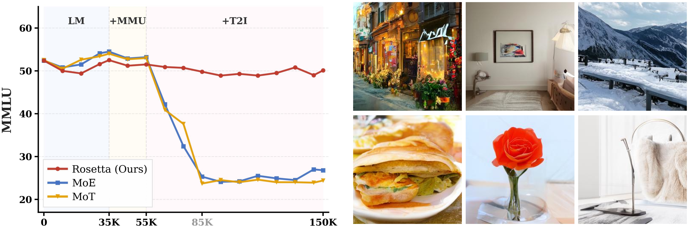
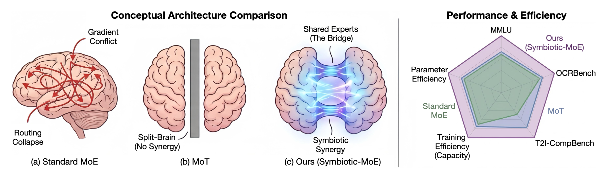
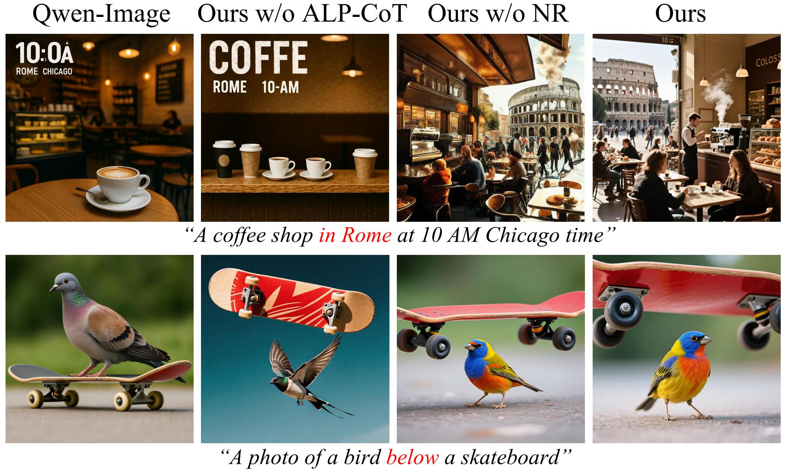
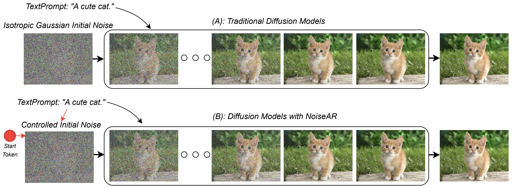

About
I'm a fourth-year PhD student at Hong Kong University of Science and Technology (expected graduation in June 2027), advised by Prof. Ping Tan.
I was fortunate to intern at Tencent Hunyuan Foundation Model Team, where I contributed to Hy Image Pre-Training, e.g. model architecture designs of Hy Image 3.5. Besides, I also worked on next architecture of Hy Image series.
My research works toward multimodal foundation models and pretraining, including:
- Multimodal Foundation Model Architecture Hy Image 3.5, Symbiotic-MoE (ECCV 2026), Rosetta (NeurIPS 2026)
- Image Generation NoiseAR, Plan-and-Paint
- 3D Generation & Editing GenN2N (CVPR 2024), GaussianAvatar-Editor (3DV 2025)
News
- 2026/09Our paper Rosetta accepted to NeurIPS 2026! See you in Sydney this Dec! 🇦🇺
- 2026/07We open-source Rosetta, the native multimodal pretraining without catastrophic forgetting! Training example: ~90 mins on 8x or 1x H20 GPUs.⚡️ Give it a try! 🔥
- 2026/06Our paper Symbiotic-MoE accepted to ECCV 2026! See you in Sweden this Sept! 🇸🇪
- 2025/10We organized the IROS 2025 workshop on Advancements for Intelligent Robotics in 4D Scenes.
- 2024/11Our paper GaussianAvatar-Editor accepted to 3DV 2025.
- 2024/01Our paper GenN2N accepted to CVPR 2024.
- 2023/09I started pursuing my Ph.D. at HKUST.
Representative Work

Rosetta: Composable Native Multimodal Pretraining
- open-source native multimodal pretraining without catastrophic forgetting.
[arXiv] [Project] [HF] [Code]
- open-source native multimodal pretraining without catastrophic forgetting.
[arXiv] [Project] [HF] [Code]

Symbiotic-MoE: Unlocking the Synergy between Generation and Understanding
- native multimodal MoE pretraining that unlocks cross-modal synergy.
[arXiv]
- native multimodal MoE pretraining that unlocks cross-modal synergy.
[arXiv]

Plan-and-Paint: Collaborating Semantic and Noise Reasoning for Text-to-Image Generation
- semantic planning (CoT) and RL (GRPO) on the initial noise prior for controllable text-to-image generation.
[Preprint]
- semantic planning (CoT) and RL (GRPO) on the initial noise prior for controllable text-to-image generation.
[Preprint]

NoiseAR: AutoRegressing Initial Noise Prior for Diffusion Models
- plug-and-play module that autoregressively learns a text-controllable initial noise prior for diffusion models.
[arXiv] [Code]
- plug-and-play module that autoregressively learns a text-controllable initial noise prior for diffusion models.
[arXiv] [Code]
GaussianAvatar-Editor: Photorealistic Animatable Gaussian Head Avatar Editor
— text-driven editing of animatable Gaussian head avatars that can be fully controlled in expression, pose, and viewpoint.
[Paper] [Project] [Code]
— text-driven editing of animatable Gaussian head avatars that can be fully controlled in expression, pose, and viewpoint.
[Paper] [Project] [Code]
GenN2N: Generative NeRF2NeRF Translation
— a unified NeRF-to-NeRF translation framework for various NeRF translation tasks such as text-driven NeRF editing, colorization, super-resolution, inpainting, etc.
[Paper] [Project] [Report] [Code]
— a unified NeRF-to-NeRF translation framework for various NeRF translation tasks such as text-driven NeRF editing, colorization, super-resolution, inpainting, etc.
[Paper] [Project] [Report] [Code]
Education & Visiting
- Ph.D. Candidate, HKUSTECE · Advisor: Prof. Ping Tan Sep. 2023 – Present
- RA, Tsinghua UniversityIIIS · Advisors: Prof. Li Yi & Prof. Yang Gao Aug. 2021 – Aug. 2023
- M.S., Beihang UniversitySoftware Engineering Sep. 2018 – Jun. 2021
- B.E., Northeast Normal UniversitySoftware Engineering Sep. 2014 – Jun. 2018
Honors & Awards
- Outstanding Graduate Student of Beijing. 06/2021
- Top 0.3% in 3D Instance Segmentation Challenge at IJCAI 2020. (Rank 2 out of 559) 08/2020
- National College Students Innovation and Entrepreneurship Training Program. 10/2016
Academic Service
- Conference Reviewer: ICCV, ECCV, ICRA, 3DV, ICLR, NeurIPS
- Journal Reviewer: TPAMI, TVCG
- Workshop Organizer: IROS 2025 Workshop on Advancements for Intelligent Robotics in 4D Scenes